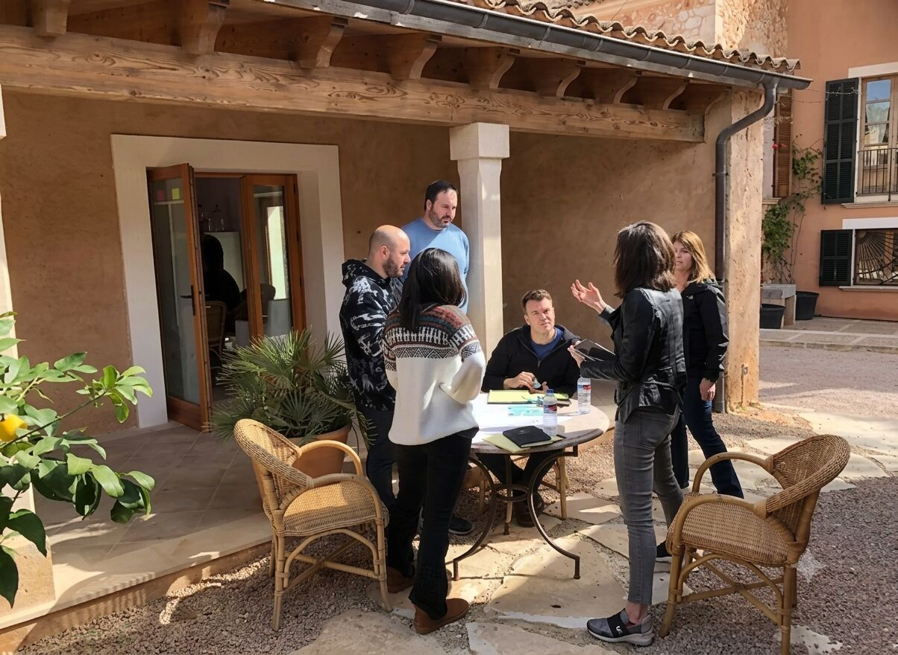
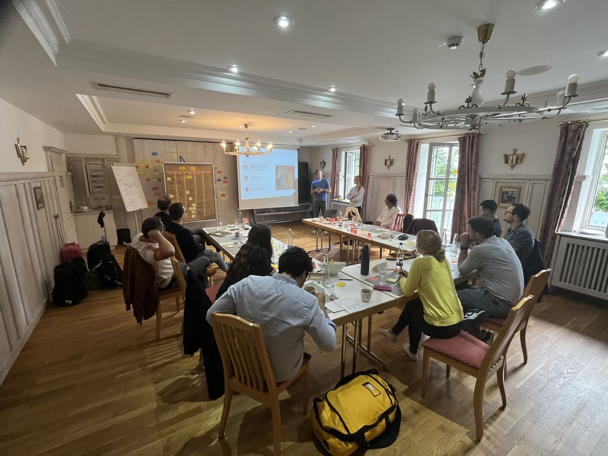
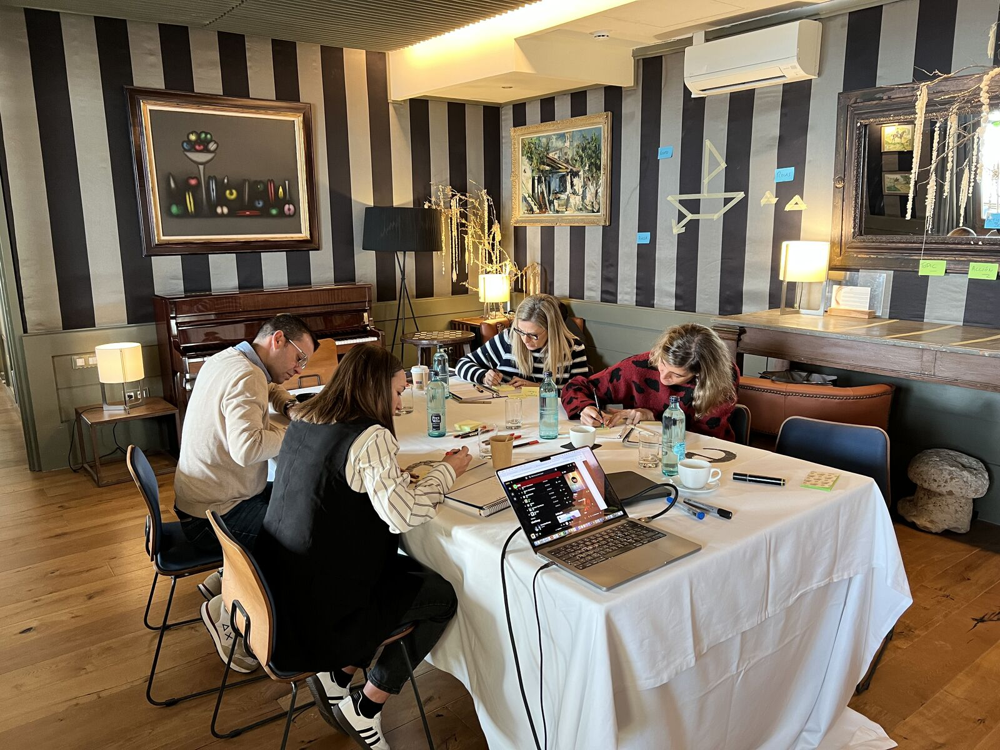
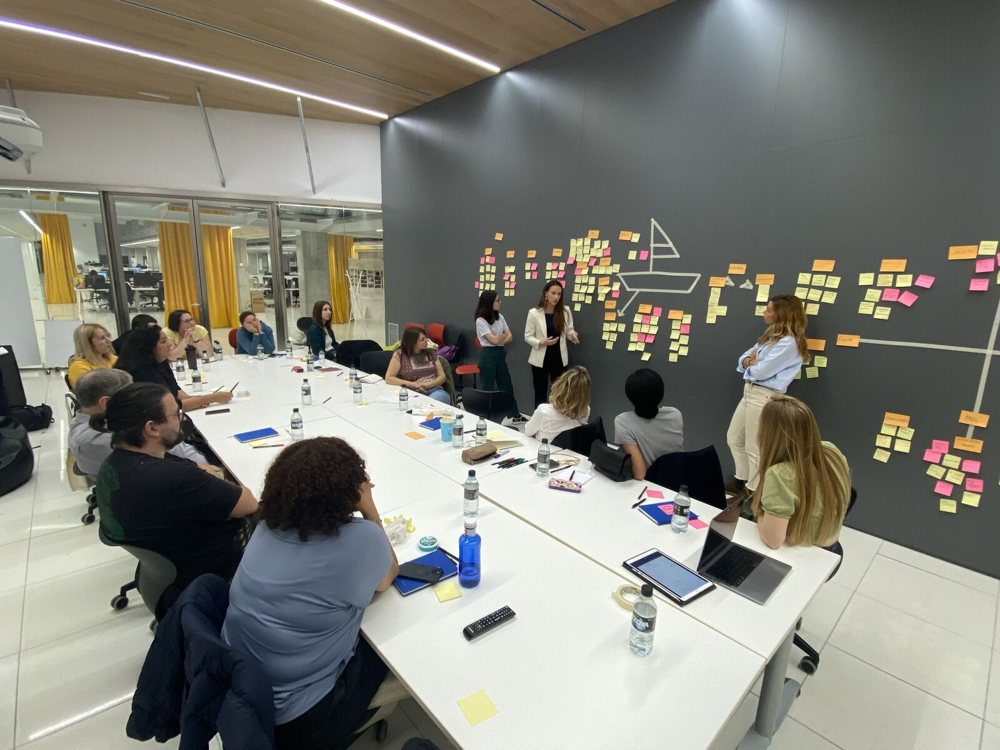

Strategic alignment and friction resolution for scale-stage companies.
Turnkey executive retreats, closed-door C-suite alignment, and remote team reconnection across Barcelona and Catalan countryside estates.Trusted by operators who’ve built at
The Offsite Paradox: High Energy, Zero Velocity on Monday
Great dining and scenic views, zero intellectual architecture.
C-suite peers avoid hard debates in plenary rooms; real conflict festers in hallways.
Facilitated by generic mindset coaches detached from P&L and runway.
High bonding evaporates in 48 hours because no decision rights were codified.
Three Ways to Work With Us

Barcelona City & Atelier
15–35 people
- Remote-first scale-ups
- Turnkey logistics + collaboration frameworks
- Poblenou Atelier / Norrsken House + catamaran

Strategy-to-Execution Sprint
5–12 C-suite executives
- 1:1 confidential intake
- In-room operator mediation
- RACI governance, 90-day compact
- Private Catalan Masia

The Leadership Slow-Down
2–6 co-founders / exec committee
- Behavioral self-awareness
- Relational reset under pressure
- 500-year-old estate in Girona
Closed-door sessions across the three formats, Barcelona to the Catalan countryside.




Build Your Offsite
Five questions. One tailored blueprint, reviewed personally by Sven and Farid within 24 business hours.
Former C-Suite Operators & Venture Studio Designers
Dr. Sven Mulfinger
Kuma PartnersExecutive alignment specialist, former CEO and Vistage Chair. Expert in mediating leadership friction, scaling governance, and turning strategic friction into 90-day execution compacts.
Farid
NonameyetStrategic designer, fractional Chief Innovation Officer. Specialist in high-tempo product innovation, brand architecture, and collaborative environments for distributed scale-ups.